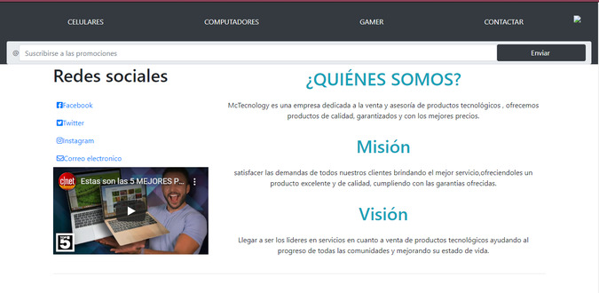

Proyectos

Página Tributo Homenaje a la artista Frida Kahlo por sus obras

Landing Page, productos tecnologicos a su alcance

Red Social

Página documental, tema CSS Laayout

Formulario de solicitud de credito

Página Team FrontEnd